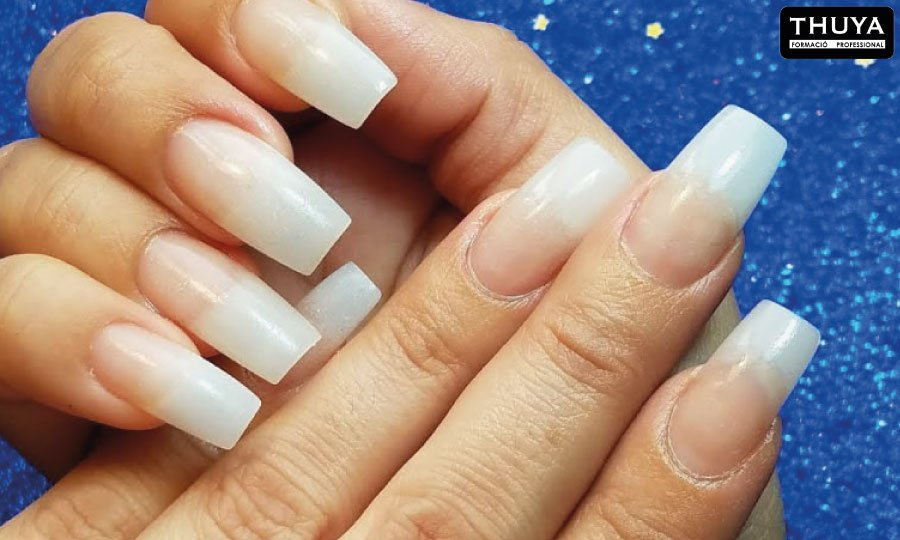
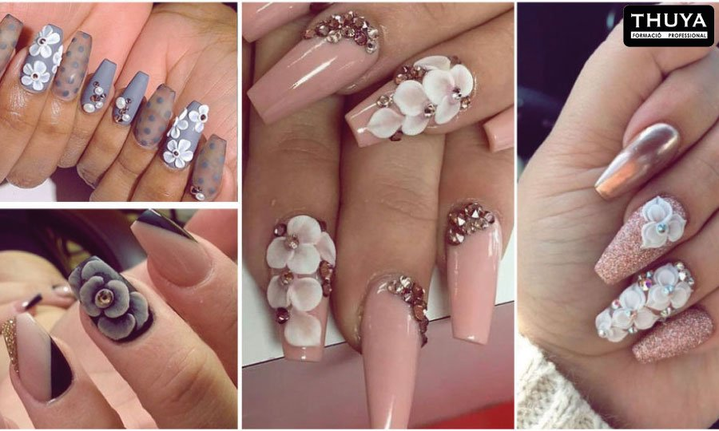
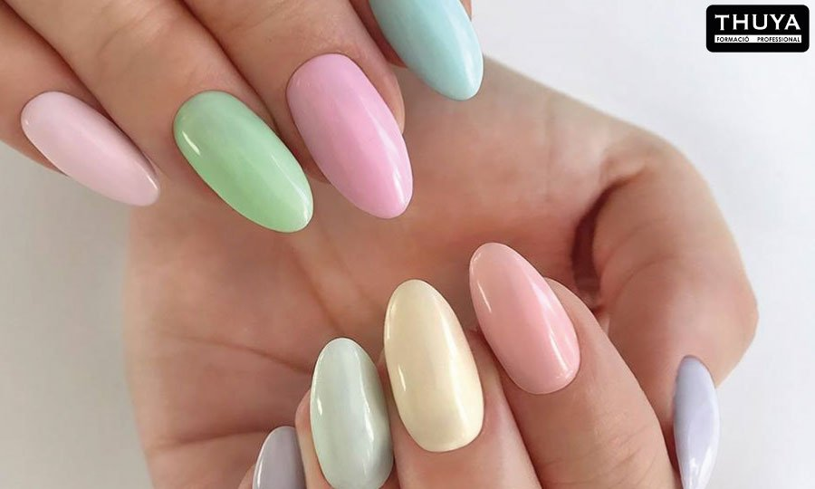

Para nadie es un secreto que la decoración de uñas y los accesorios para manicuras tienen
gran demanda en el mercado.
Las uñas han tomado gran importancia debido a que son consideradas una carta de presentación
que aporta feminidad, higiene y, sobre todo, personalidad.
Como apasionada de la belleza es importante que aprendas las nuevas técnicas que se van
incorporando en el sector para responder a las necesidades de tus clientes.
Las principales técnicas de uñas son
Uñas acrílicas
Uñas artificiales a base de un líquido especial (monómero) y un polvo de porcelana. Con un
seguimiento correcto suelen ser más resistentes que las de gel.
Son de tecnología más avanzada, el resultado final es el mismo que las uñas acrílicas, aunque
las de gel son más flexibles.
UÑAS DE FIBRA DE VIDRIO
Son más frágiles que las anteriores, pues son a base de fibra de vidrio. Tienen mayor resistencia
y durabilidad que las de gel, es quizá una de las técnicas más costosas de realizar y mantener.

DECORACIONES 3D
Esta técnica puedes realizarla a través de acrílico o de gel plasteling pero a día de hoy, se
están conociendo nuevas maneras de colocar una decoración 3D encima de las uñas esculpidas o
bien, un esmaltado semipermanente a través de impresoras 3D se pueden crear modelos de uñas que
jamás hemos visto antes, con relieves y figuras sobrepuestas que hacen parte de una sola pieza.


Esmalte semipermanente
Se aplica de manera similar al esmalte tradicional, pero con resultados mucho más duraderos. Es
un tipo de gel mucho menos denso que nos aporta color en la uña natural, sin necesidad de un
alargamiento. Suele durar entre 15/20 días, aunque todo depende del crecimiento de la uña.